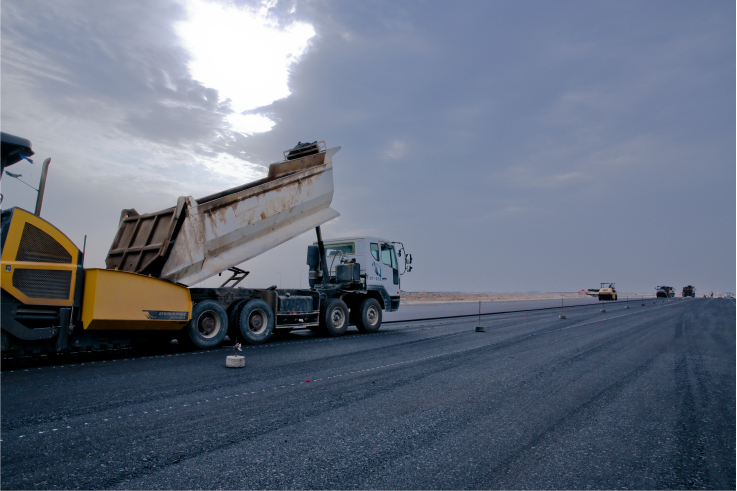

właściwości
Odwodnienie liniowe


| Beton B30 | Polimerobeton | ||
| Wytrzymałośc na ściskanie RC [MPa] | 30 | 80-110 | |
| Wytrzymałośc na rozciąganie przy zginaniu Rg [MPa] | 2-4 | 22-35 | |
| Wytrzymalosc na rozciąganie przy rozłupywaniu Rr [MPa] | 1,5-2 | 8-12 | |
| Ścieralnoc [cm] | 0,6 | 0,1-0,2 | |
| Nasiąkliwośc [mm] | 4,8 | 0 |